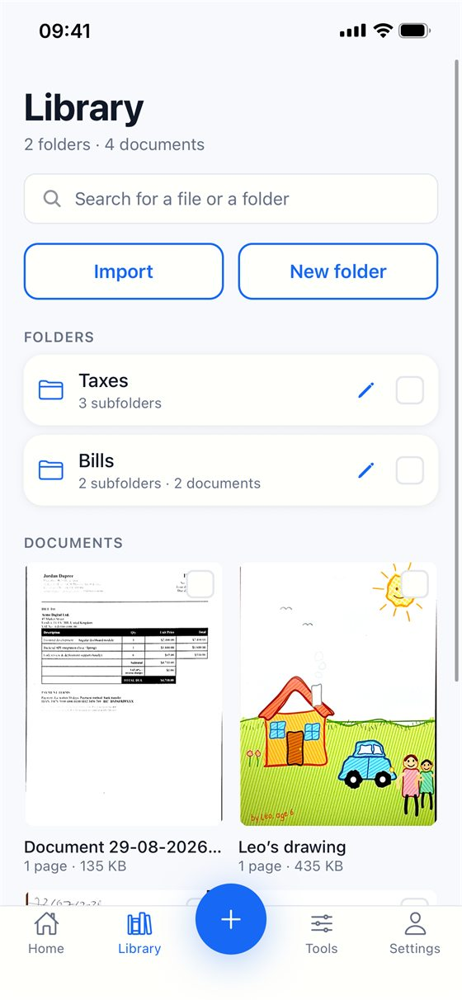
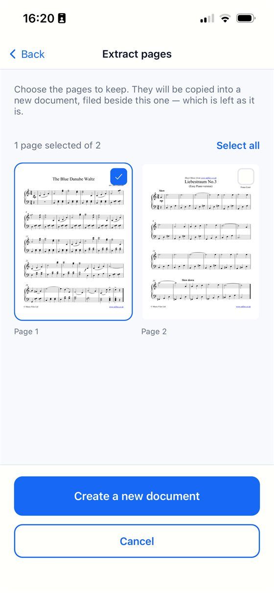

Scan Cam에서 PDF 열기
PDF가 아직 보관함에 없다면 가져오기 → 파일을 탭하고 PDF를 고르세요. 각 페이지가 스캔한 페이지처럼 문서의 한 페이지가 됩니다. 암호로 보호된 PDF나 100페이지가 넘는 PDF는 가져올 수 없습니다.

페이지 고르기
- 문서를 열고 페이지 추출을 탭합니다.
- 남길 페이지를 체크합니다. 긴 문서에서는 모두 선택과 모두 선택 해제로 시간을 아낄 수 있습니다.
- 새로운 문서 만들기를 탭합니다.

고른 페이지가 새 문서로 복사되어 원본 옆에 놓이며, 원본은 그대로 남습니다. 모든 페이지를 남기는 것은 일부러 막아 두었습니다. 그것은 단순한 사본이 되기 때문입니다.
새 문서 보내기
새 문서를 열고 공유를 탭한 다음, PDF를 선택해 보내거나 파일 앱에 저장하세요.
무료일까요, Pro일까요? 페이지 추출은 Pro 구독에 포함되며, Pro 구독은 7일 무료 체험으로 시작합니다. 체험 기간이 끝나기 전에 해지하면 요금이 청구되지 않습니다. 스캔, 가져오기, PDF 내보내기는 계속 무료입니다.
알아 두면 좋은 점
- 페이지가 복사되는 것이므로, 나중에 새 문서를 삭제해도 원본에는 영향이 없으며 그 반대도 마찬가지입니다.
- 한 페이지만 이미지로 보내려면 먼저 그 페이지를 추출한 다음 JPEG로 공유하세요.
Scan Cam 사용해 보기
Scan Cam은 무료로 다운로드할 수 있습니다. 스캔, 폴더, 필터, PDF 내보내기는 기간 제한 없이 무료이며, Pro 구독은 추가 도구를 제공하고 7일 무료 체험으로 시작합니다.
App Store에서 다운로드